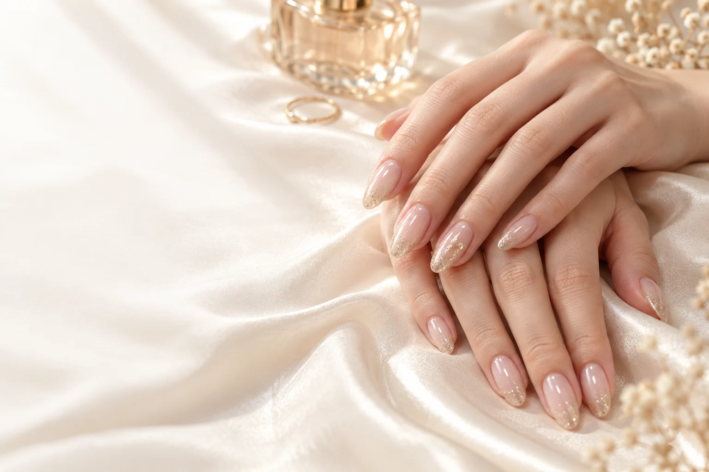

ひとりの時間を、大切に。
落ち着いたプライベート空間を想定した、完全予約制サロンのデモです。

ELEGANT GLOW, JUST FOR YOU.
日常に溶け込む上品さと、
ふとした瞬間に心がときめく輝きを。
PRIVATE NAIL SALON / FICTIONAL DEMO
OUR PHILOSOPHY
お気に入りのジュエリーを選ぶように、
指先にも、今の私にしっくりくる輝きを。
リュールが思い描くのは、日常にそっと寄り添うネイル。色、質感、細いライン。その小さな違いを、大切にしたいから。
サロンの想いを知る ↗POPULAR MENU
デモ上のおすすめメニューです。料金はすべて税込のサンプル金額です。
NAIL COLLECTION
AI生成のデザインイメージです。実際の施術例ではありません。
THE LUEUR EXPERIENCE
落ち着いたプライベート空間を想定した、完全予約制サロンのデモです。
好きな色も、迷っている気分も。丁寧な相談から始めるサロンを目指します。
オフィスにも特別な日にも。さりげない色と繊細な輝きを提案するイメージです。
INFORMATION
学習用デモサイトを制作しました。
予約・お問い合わせは送信されない体験用フォームです。
6つのテーマからデザインを探せます。
BEFORE YOUR FIRST VISIT
予約や施術について、気になることをまとめました。